人民路 / 2008
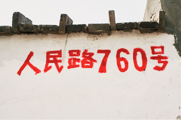
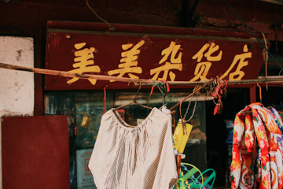
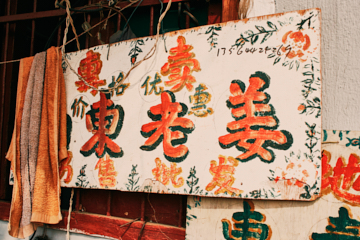


 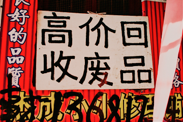
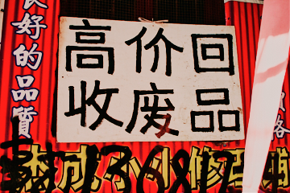

 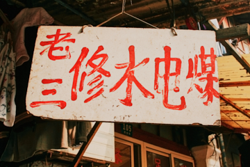
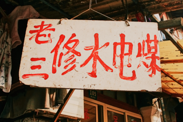


 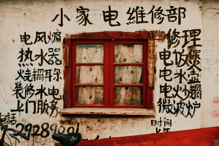
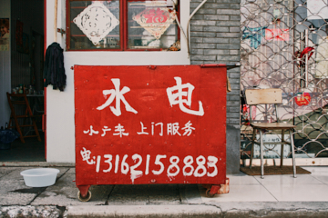
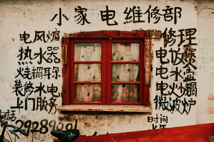
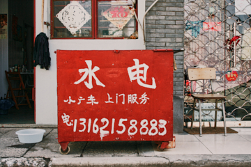


 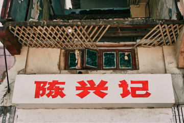
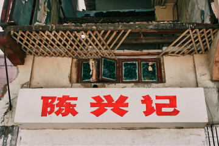
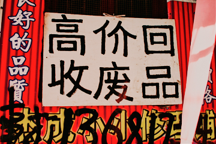
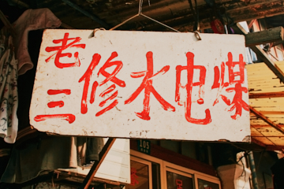
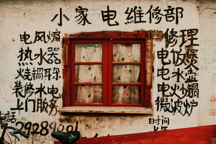
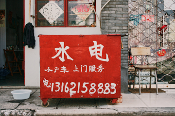
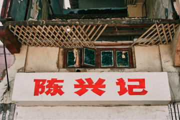
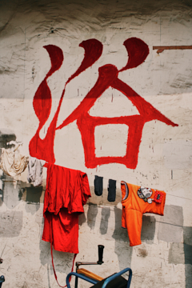
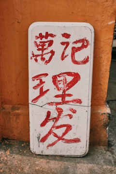
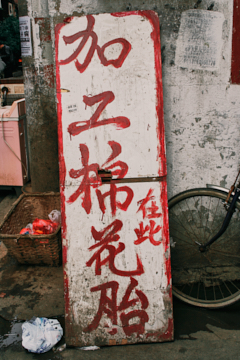
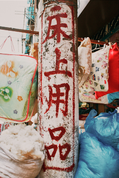

 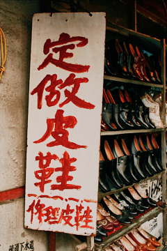
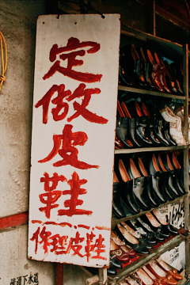


 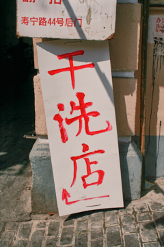
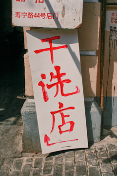
 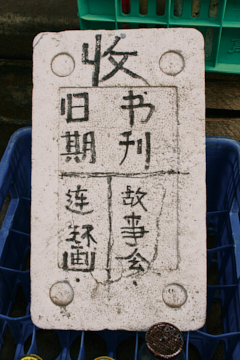
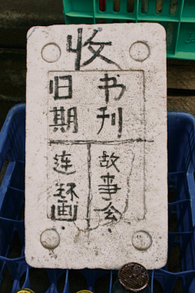
 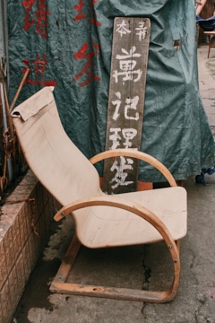
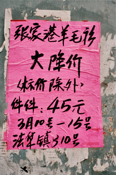
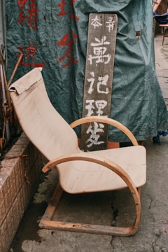
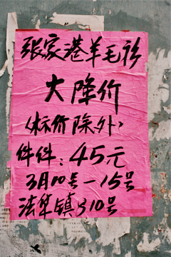


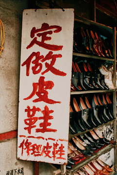
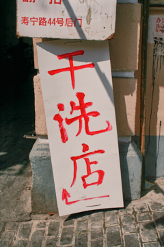
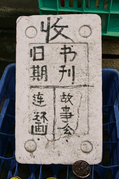
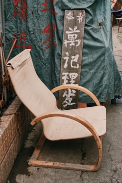
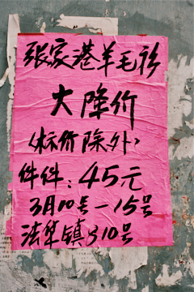
上海は明暗のコントラストが強い。南京東路の繁華街を歩きながら、ビルの合間の裏手を左右に覗き込んだときに感じた影は深かった。
開発論理が優先されるのはどこも同じだ。旅行ガイドで見かけた中国のことわざがうっすら記憶にある。
「古いものが去ってこそ新しいものが来る」。経済の中心地・上海を説明する文脈としてはうなずける。だが、古いものを経済性で裁くような響きもあって、素直に受け取れなかった。
そこで、相対的に開発が遅れている在来市場を探した。人民広場を含む繁華街と、観光地として名高い上海旧市街のあいだに位置するエリアだ。すでに大きな区画の中に半ば崩れかけた建物がいくつもあり、瓦礫が散乱している。おそらく、間もなく消えてしまう場所だろう。
以前、ソウル・黄鶴洞の万物市場の地域性を主題に制作した経験の延長として、今回は上海エリアの手書き看板を記録した。
- 2020『万物市場』, Label Gallery, ソウル — 個展
- 2008『Everyday is not the same』, BizArt, 上海 — グループ展